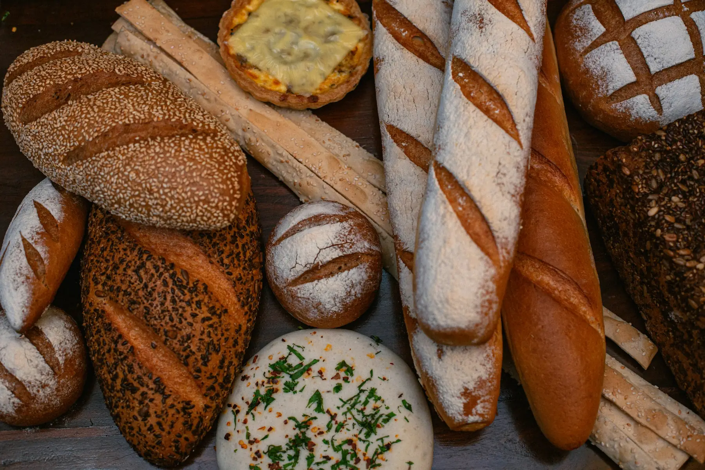
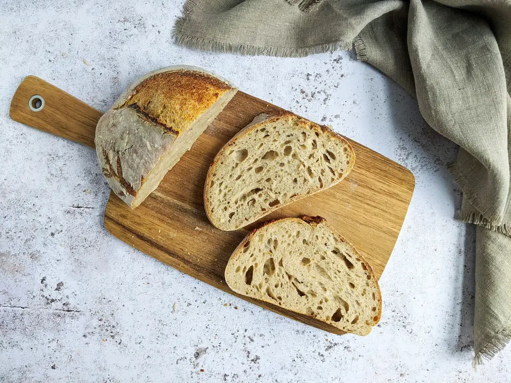
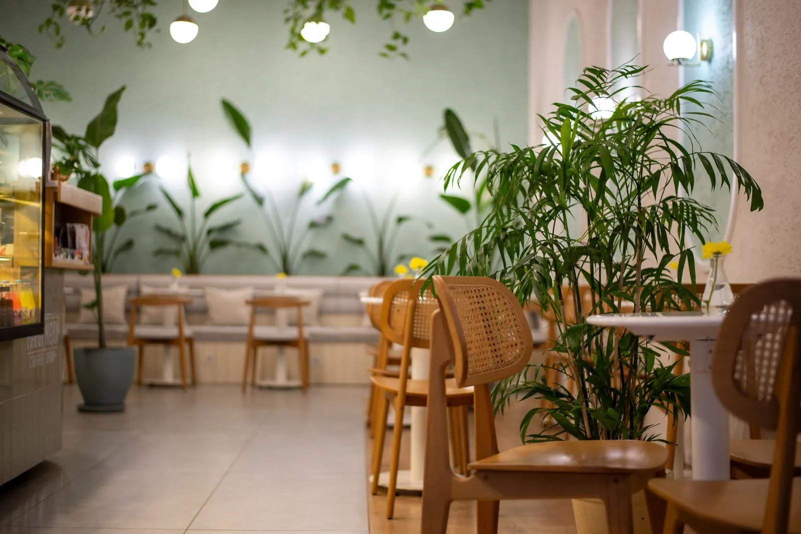

朝いちばんの、焼きたてとコーヒー。
毎朝焼き上げるパンと、自家焙煎のコーヒー。
西尾駅から歩いて5分。ひなたぼっこのような朝ごはんを。
- 営業
- 7:30〜17:00
- 定休日
- 水曜・第3木曜
About hinata ひなたについて
陽のあたる窓ぎわで、
焼きたてをひとつ。
ひなた珈琲とパンは、町の人も旅の人もふらりと立ち寄れる、小さなパン屋とカフェです。
特別な日のごちそうではなく、毎日食べても飽きないやさしい味を。朝の光が差しこむ席で、ゆっくり過ごしてください。

-
自家焙煎のコーヒー
店の奥の小さな焙煎機で、週に2回、少しずつ焼いています。
-
国産小麦のパン
香りのいい国産小麦と自家製の酵母で、毎朝6時から焼き上げます。
-
近くの畑の野菜とたまご
サンドイッチには、西尾の農家さんから届く野菜とたまごを使います。
Morning 7:30からのモーニング
お好きなパン2つと、ドリンク、小さなサラダのセット。旅の朝ごはんにもどうぞ。
- パンのセット
- ¥880
- パンケーキのセット
- ¥1,100
7:30〜10:30。ドリンクはブレンド・和紅茶・西尾抹茶ラテから選べます。
Cafe 店内のこと

窓の大きな店内に18席と、テラスに4席。
買ったパンは、そのまま店内で召し上がれます。
Shop info 店舗情報
| 住所 | 愛知県西尾市ひなた町1-2-3 （架空の住所です） |
|---|---|
| 営業時間 | 7:30〜17:00（ラストオーダー 16:30） モーニング 7:30〜10:30 |
| 定休日 | 水曜日・第3木曜日 |
| 席数 | 18席（テラス4席） |
| 電話 | 0000-00-0000（ダミー） |
| アクセス | 名鉄西尾駅から歩いて5分 |
パンのお取り置きは、前日の17時までお電話で承ります。